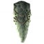
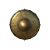
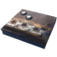
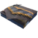
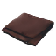
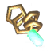
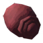

Karta › Föremål Föremålslista för Valheim
Var finns det, i vilket biom och med vilket verktyg? Listan omfattar 864 föremål – material, mat, vapen, rustningar och troféer. För varje föremål ser du var det kommer ifrån (träd, malmfyndigheter, varelser, kistor, handlare), vilket verktyg som krävs, receptet och vad det används till. Alla uppgifter är lästa direkt ur spelfilerna (version 1.0.21).
Inget föremål hittades.

Asksvinsmantel
Bronsbucklare
Enkel klänning, brun
Klänning med sjal, brun
Lädertunika
Pulsating Earrings
Vriden huvudduk, röd
×